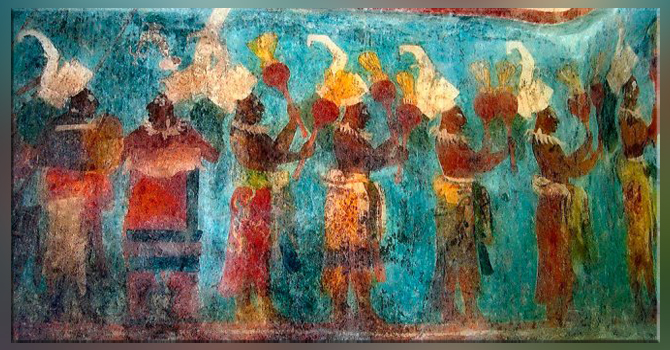
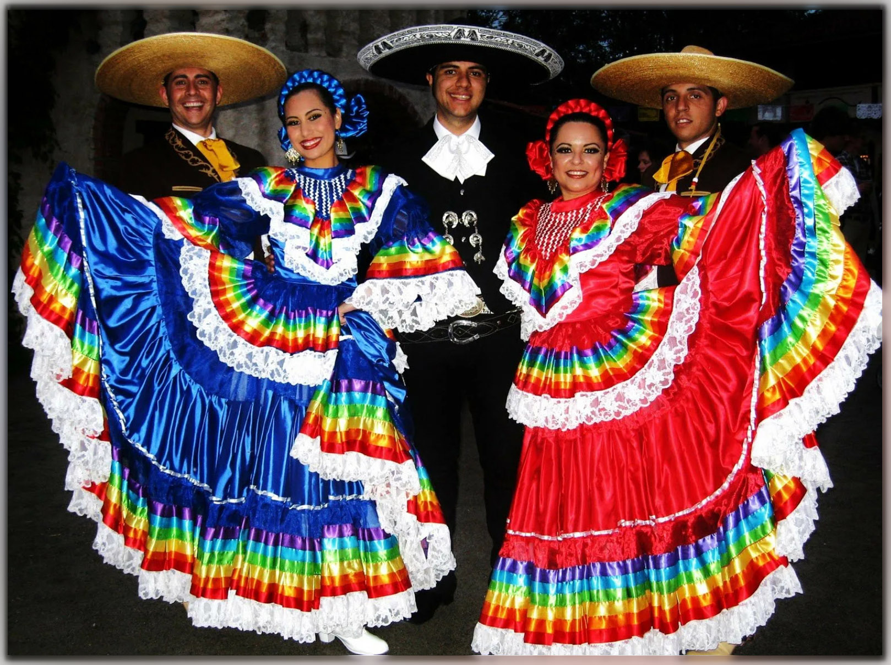
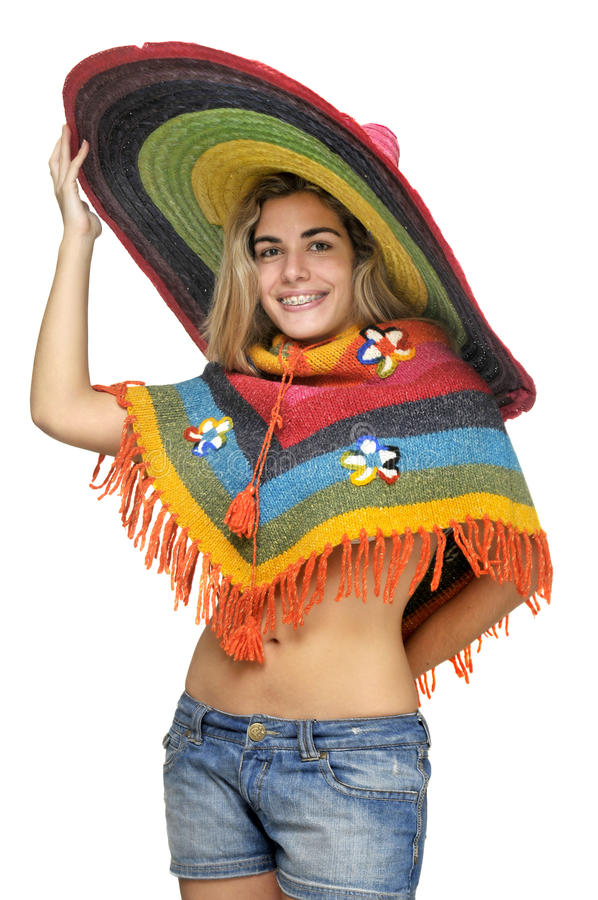

Что такое сомбреро, особенности конструкции
Сомбреро является частью национального костюма мексиканца. Данный головной убор выглядит как шляпа свысокойzконусовидной тульей и широкими полями. Благодаря им, тень падает практически на всё тело. Каждый народ подгонял ее конструкцию под свою национальность и регион проживания. Своё путешествие по миру сомбреро начало именно стропических стран. Классический вариант представляет собой шляпу с высокой тульей и очень широкими полями,немного загнуZтыми к верху со шнурком или лентой, завязывающейся под подбородком.
Бедные люди надевают соломенные изделия, а зажиточные наряжаются в дорогие сомбреро из различных материалов: фетра, бархата, войлока. Но все они без исключений изготавливаются только ручным способом. Мексиканская шляпа имеет остроконечную конусообразную тулью, а по всей площади видно красочную национальную вышивку, помпончики, различные украшения. Названиеz мексиканской шляпы в самой Мексике «Sombrero Charro». Со временем появилось много разновидностей и других названий:
- sombrero vaquero (с испанского vaquero – пастух) обыкновенный ковбойский головной убор с плоской тульей и не очень широкими полями, завернутыми вверх;
- sombrero Charro – шляпа с высокой конусовидной тульей и очень широкими полями;
- sombrero vueltiao – национальная символика Колумбии, выделяются черно- белой окраской, сделаны они изтростника;
- sombrero pintado – головной убор жителей Панамы.
Немного истории
С течением времени сомбреро обзавелось массой разновидностей. Каждый народ создавал его для себя, подчиняясь своим традициям и особенностям региона проживания. Логично, что своё шествие по миру шляпа начинает с жарких стран.
В Испании под сомбреро понимают любую шляпу с широкими полями. В классическом варианте ей присуща высокая тулья и завязки под подбородком, иногда края могут быть слегка вывернуты наружу. Шляпу носили и бедняки, и богачи. Но если первые могли позволить себе головной убор только из соломы, то вторые носили сомбреро из всевозможных дорогих тканей (фетр, бархат и другие). Объединяет этот предмет лишь одно – его всегда делали вручную.
Соломенное сомбреро можно окрасить в разные цвета.
В честь сомбреро в штате Техас, США, проходит фестиваль шляп. С 1986 года Sombrero Festival проводится ежегодно в феврале. Не забывают о сомбреро и ведущие дизайнеры. Сделанная из натуральных материалов шляпа зачастую дополняет эксклюзивные авторские коллекции, привнося в них великолепие и шик. Особенно заслуживаюит внимания роскошные бархотные сомбреро!
В Мексику этот головной убор пришел значительно позднее чем была рождена идея широкополой шляпы. Первые похожие на сомбреро варианты появились еще в XIII веке у монгольских всадников. Позже в Испании стали носить Sombrero vaquero (с испанского vaquero – пастух). Это были не высокие ковбойские шляпы с полями средней длины. Испанцы изобрели такой убор, чтобы защитить себя от обжигающего солнца.
Ведь именно на испанском слово «sombra» означает «тень». Отсюда пришло название сомбреро. Шляпа мексиканца предназначалась для защиты тела и лица от жаркого солнца, пыли, дождя, ветра. Но также ею возможно потушить огонь, благодаря широким полям, либо, наоборот, разжечь погасшие угли, накрыть напавшую ядовитую змею, напоить коня. Сомбреро плотно вошло в традиции и обычную жизнь Мексики. Невозможно представить мексиканца без него. Туристы, приезжающие в эту страну, покупают традиционную мексиканскую шляпу в качестве сувенира. Действительно это очень удобная, практичная вещь. В современной Мексике у простых людей сомбреро не встретишь, но их до сих пор носят уличные музыканты, чарро и в дни фестиваля.
Интересные факты
Сомбреро посвятили фестиваль, проходящий из года в год в городе Браунсвилл, штата Техас, США. Называется этот фестиваль Sombrero Festival. Первый раз это массовое мероприятие провели в 1986 году, с того времени каждый год его посещают более 40 тысяч человек. Фестиваль стал самым крупным событием в Техасе, принося пользу организациям по всему штату. Он является культурным наследием таких городов как: Матаморос, Тамаулипас и Браунсвилл. Этот фестиваль призван укреплять дух традиций и добавить праздника в дни Чарро.
Бумажное сомбреро
Сомбреро из бумаги – самый простой вариант изготовления этого аксессуара. Такой вариант отлично подойдет, если вы хотите, чтобы ребенок осуществил задумку самостоятельно, или если нет времени на подготовку и выполнение работы, потому что такое сомбреро делается быстро и очень легко. Также при выборе такой версии изделия не нужно тратить время и деньги на подготовку и материалы.
Для всего процесса создания сомбреро понадобятся:
- листы цветной бумаги
- инструменты для работы
- ножницы;
- кисточки;
- ведерко из-под майонеза
- цветные краски
- гуашь;
- двусторонний скотч
- декоративные элементы
- бусины;
- перья;
- шнурки;
Из цветной бумаги необходимо вырезать круг диаметром 40 см (диаметр может быть различным, все зависит от того, насколько широкополая шляпа должна получиться в итоге). Внутри вырезанного в пункте 1 круга рисуем круг, диаметр которого на 0,5 см меньше диаметра майонезного ведерка. Внутри нарисованного круга вырезаем отверстие. Радиус этого отверстия должен быть на сантиметр меньше радиуса нарисованного круга. Делаем надрезы от внутреннего отверстия до нарисованного круга. Наглядно это показано на фото ниже. Крепим круг из цветного картона при помощи клея к майонезному ведерку. Зазубрины клеятся внахлест на стенки ведерка. Оставляем изделие и даем клею просохнуть. После сушки переходим к оформлению красками майонезного ведерка. Характерным для мексиканских сомбреро узором будут горизонтальные полоски черного, зеленого, красного, желтого и оранжевого цветов.